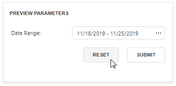

Parameters Overview
You can use report parameters to pass data to a report before it is generated. Parameter values are specified in the Preview Parameters panel.
Add Parameters
Switch to the Field List, select Parameters and click the  button.
button.

This invokes the Add Parameter dialog where you can configure the created parameter.

The dialog provides the following options:
- Name
The unique name by which you can refer to the parameter. - Description
The text that appears in Print Preview alongside with the value editor. - Type
The parameter's value type. A value editor for the specified type is displayed in Print Preview. - Visible
Set this option to request the parameter value in Print Preview. Otherwise, the report takes the default parameter value. - Multi-Value
Enable this option to allow a parameter to accept a collection of values. - Allow Null
Check this option if the parameter's value can be unspecified. - Expression
An expression that defines the parameter's value based on specific conditions. Click the Expression property's ellipsis button and construct an expression in the invoked Expression Editor. Value
The parameter's default value. When you change a parameter's value in Print Preview, you can press Reset to return to the default value.
Value Source
The parameter's value source type.No Look-Up
There are no predefined parameter values.
Static List
A static list of predefined values. Provide a description for each value.

Dynamic List
A predefined list of values retrieved from the specified data source. Value Member defines the data field that provides the parameter's values. Display Member defines the data field that stores values displayed in the parameter's editor.

If the data member's value type does not match the parameter type, the validation rejects the value.
You can specify the Filter String property to filter the list of values and implement cascading parameters.
Specify the Sort Order and Sort Member properties to sort parameter values.
Range Parameters (available for Date parameters only)
A value range between the Start Parameter and End Parameter. The start and end parameters provide the following properties:
- Name - the unique name by which you can refer to the parameter.
- Value - the parameter's default value.
Expression - an expression that defines the parameter's value based on specific conditions.

Use Parameters
Use report parameters in the following cases:
Filter
Parameters can provide values to a report's Filter String to filter report data.

You can link report parameter to query parameters used in the SQL string's SELECT statement to filter data at the data source level.
Bind to Data
You can bind a report control to a parameter and display its value in a report. To create a new label bound to a parameter, drag the parameter from the Field List and drop it onto a band.

Add a question mark in front of a parameter's name to refer to it in mail merge.
Specify Expressions
Use a question mark (?) in front of a parameter's name to include it in an expression.